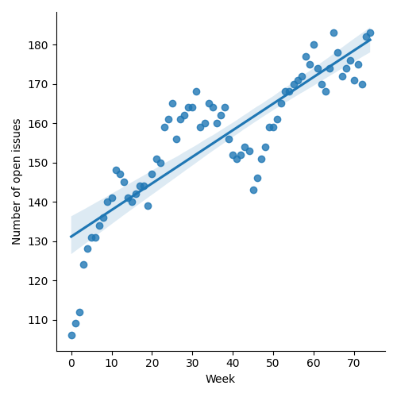
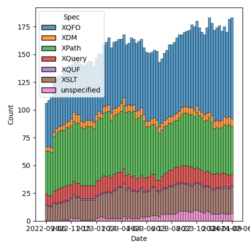
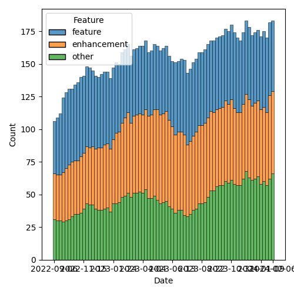

QT4 CG Meeting 065 Minutes 2024-02-13
Table of Contents
- Draft Minutes
- Summary of new and continuing actions
[0/10] - 1. Administrivia
- 2. Technical Agenda
- 2.1. PR #795: 655 fn:sort-with
- 2.2. PR #972: 949 Partial Function Applications: Allow return of function name
- 2.3. PR #988: 960 Pinned and labeled values
- 2.4. PR #985: 720 Add lookup arrow expressions (method invocations)
- 2.5. PR #978: 948 Reflected the comments of the CG on the specification of scan-left and scan-right
- 3. Any other business
- 4. Adjourned
Meeting index / QT4CG.org / Dashboard / GH Issues / GH Pull Requests
Draft Minutes
Summary of new and continuing actions [0/10]
[ ]QT4CG-052-02: NW to consider how to schedule an “editor’s meeting”[ ]QT4CG-056-04: MK to write a proposal for adding a select attribute to xsl:text[ ]QT4CG-058-02: MK to consider providing more advice about the pitfalls of mixing decimal and double when sorting[ ]QT4CG-063-01: MK to revise #956 especially with respect to the options parameter[ ]QT4CG-063-02: JK to consider whether the roman numeral example is appropriate for the spec.[ ]QT4CG-063-04: NW to try to add test review to the editorial meeting.[ ]QT4CG-063-05: MK to revise PR #953 to take account of CG’s comments[ ]QT4CG-063-06: MK to consider refactoring the declare item type syntax to something like declare record[ ]QT4CG-064-08: NW to open an issue to try to resolve $search to $target consistently.[ ]QT4CG-065-01: CG to amend PR #795 to address MK’s comment re: implementation defined behavior
1. Administrivia
1.1. Roll call [11/13]
Regrets: MSM.
[X]Reece Dunn (RD)[X]Sasha Firsov (SF) [:06-][X]Christian Grün (CG)[X]Joel Kalvesmaki (JK) [:05-][X]Michael Kay (MK)[X]Juri Leino (JLO)[X]John Lumley (JLY)[X]Dimitre Novatchev (DN)[X]Wendell Piez (WP)[X]Ed Porter (EP)[ ]Adam Retter (AR) [:10-][ ]C. M. Sperberg-McQueen (MSM)[X]Norm Tovey-Walsh (NW). Scribe. Chair.
1.2. Accept the agenda
Proposal: Accept the agenda.
Accepted.
1.2.1. Status so far…

Figure 1: “Burn down” chart on open issues

Figure 2: Open issues by specification

Figure 3: Open issues by type
1.3. Approve minutes of the previous meeting
Proposal: Accept the minutes of the previous meeting.
Accepted.
1.4. Next meeting
The next meeting is scheduled for Tuesday, 20 February 2024.
Any regrets for the next meeting?
Regrets: JLO.
1.5. Review of open action items [9/18]
[ ]QT4CG-052-02: NW to consider how to schedule an “editor’s meeting”[ ]QT4CG-056-04: MK to write a proposal for adding a select attribute to xsl:text[ ]QT4CG-058-02: MK to consider providing more advice about the pitfalls of mixing decimal and double when sorting[X]QT4CG-062-03: JK to revise the fn:hash function along the lines discussed at the meeting[ ]QT4CG-063-01: MK to revise #956 especially with respect to the options parameter[ ]QT4CG-063-02: JK to consider whether the roman numeral example is appropriate for the spec.[X]QT4CG-063-03: DN to address the editorial remarks from meeting 063 in a new PR.[ ]QT4CG-063-04: NW to try to add test review to the editorial meeting.[ ]QT4CG-063-05: MK to revise PR #953 to take account of CG’s comments[ ]QT4CG-063-06: MK to consider refactoring the declare item type syntax to something like declare record[X]QT4CG-064-01: MK to remove “#…” and “#x…” arguments fromfn:char[X]QT4CG-064-02: CG to update the fallback function to use the newcharargument.[X]QT4CG-064-03: CG to add examples to show how JSON parsing changes are useful.[X]QT4CG-064-04: CG to change the return type offallbacktoxs:untypedAtomic?[X]QT4CG-064-05: CG to amend the names in the keys-where example to be more inclusive[X]QT4CG-064-06: Add akeys-whereexample that uses the value in a more interesting way.[X]QT4CG-064-07: CG to add anarray:index-ofexample that uses a collation[ ]QT4CG-064-08: NW to open an issue to try to resolve $search to $target consistently.
1.6. Review of open pull requests and issues
1.6.1. Merge without discussion
The following PRs are editorial, small, or otherwise appeared to be uncontroversial when the agenda was prepared. The chairs propose that these can be merged without discussion. If you think discussion is necessary, please say so.
- PR #1010: 1009 Examples, Return type of parse-json:fallback
Proosal: Accept without discussion.
Accepted.
1.6.2. Close without action
It has been proposed that the following issues be closed without action. If you think discussion is necessary, please say so.
- Issue #994: Invoking maps & arrays: allow sequences?
- Issue #989: character sequence constructor 'a' to 'z'
- Issue #79: fn:deep-normalize-space($e as node())
- Issue #55: Provide an XML version of the stack trace
- Issue #42: Relax type incompatibility in order by clause (impl. dep. instead of XPST0004)
Proposal: Close without action.
Accepted.
2. Technical Agenda
As agreed, we continue with the items left over from last week.
2.1. PR #795: 655 fn:sort-with
See PR #795
T.B.D. Was there progress over the week or is more discussion required?
- CG: I’ve incorporated JLY’s proposal to allow multiple comparitors.
- … Multiple functions are in alignment with sort function.
Proposal: Accept this PR.
- MK: There’s a comment of mine that hasn’t been applied. We give an
implementation as normative prose, but say in the notes that we can provide
another one. But there are aspects of the implementation are implementation
defined.
- … I think the best thing to do would be to say what’s implementation defined and then say that equivalence is only with respect to things that aren’t implementation defined.
- CG: What are the implementation defined cases?
- MK: One example: if a comparitor returns a failure then different implementations might raise different errors.
- RD: Excluding error cases?
- MK: Excluding error cases and provided that the comparitor is transitive.
ACTION: QT4CG-065-01: CG to amend PR #795 to address MK’s comment re: implementation defined behavior
- DN: If I understand MK, then you can’t provide a single oracle function. One
example of a difference is a sequence that contains equal items that might
come back in different orders.
- … If there’s a strict oracle function, then maybe it could be made better
Some discussion of the details of what happens when the comparitors return equal. The goal is stable sort.
We’ll consider this for merging without discussion next week after CG’s ammendments.
2.2. PR #972: 949 Partial Function Applications: Allow return of function name
See PR #972
CG introduces the PR.
- CG: First, editorially, I’ve aligned the names of the abbreviations.
- CG: The major change is to allow returning the name. This handles cases where
there multiple implementations that are the same because all of the parametes are
?. - MK: Is there a data model change?
- CG: Just editorial changes.
- DN: I think it would be better to forbid partial application where are placeholders are quesiton marks. It’s meaningless and leads to “problems” where CG wants to get the actual function. We can forbid this.
- CG: Many users use question marks instead of hashes. And that change would be backwards incompatible.
- RD: I’d be strongly opposed to making that change. It’s backwards incompatible
and especially when there’s only one parameter, using
#1or a single?is quite common.
Proposal: Accept this PR.
Accepted.
2.3. PR #988: 960 Pinned and labeled values
See PR #988
MK introduces the PR.
- MK: The aim here is to support essentially zipped navigation of JSON “trees”.
This allows you to navigate down a tree and then go back up again.
- … This isn’t a complete proposal, it’s setting the groundwork for consensus.
- … In the Data Model, we add the concept of labeled items.
- … One question is if it should be labeled items or labeled values.
- … We might restrict a labled item so that can’t contain a labeled item.
MK reviews the rules in 2.10 Labeled Items in the Data Model specification.
- MK: Operations like deep lookup are defined to return labeled items.
- … We define
fn:pinthat you can apply to a map or an array to mark it as pinned. That says any navigation that I do will return labeled values.
- … We define
- MK: The change to the language is in section 4.15.4 in lookups which now
describe how pinned maps and arrays work.
- … The assumption is that everything is defined in terms of map:get so all of the other navigation operators will have the same effect.
- … You can access the label properties to navigate around the tree you searched.
- … There are two ways to present this and I’m a little torn. One is to say
that
map:getattaches the label, and the other is that pinning the label attaches them to the subtree. So you can present the formal model in terms of having all of the labels attached. - … We can build things like deep update on top o fthis.
- RD: Can we use annotations for this? We’ve got annotations and functions, variables and items. It seems logical to extend that concept to other items in general. And then we’d have a unified mechanism for associating this kind of metadata on an item.
- MK: That’s certainly feasible.
- DN: I think this is very welcome change. I have some questions. If we have a deep lookup, will it pin all the items or only the final result? Second, if some item belongs to two different maps, and if we do this with two different lookups, will the item be pinned twice, or duplicated, or what? And I didn’t understand the first bullet in the DM spec.
- MK: The assumption of on deep lookup is that the semantics are defined in
terms of shallow lookup, so you’d label evertyhing all the way down. Doing the
labeling eagerly is one way fo doing that.
- … In our model, there’s no way to ask if a map is shared between two subtrees; we don’t have identity. But pinning in principle copies the values; anything else is an implementation issue.
Some discussion of what the semantics of update are likely to be.
- DN: This seems confusing. If we have several copies of the same item and we perform different updates, I don’t know how many copies there will be.
- MK: It’s less complicated than it appears because these items don’t have identity.
- JLY: This is all invisible unless you go through the label accessors, is that the case?
- MK: Yes.
- JLO: We can assume that if
fn:pinisn’t implemented, then none of this is implemented.- … Another thing I noticed is that the transitive closure function is defined on nodes.
- MK: Right. I shouldn’t have used it in the example; I raised a separate issue about that.
- JK: Has there been discussion of what kinds of entries can be in the label?
- MK: At the data model label, it can contain any key/value pairs. But the map lookup is returning values with specific properties in the label.
- JLY: The maps that come back, can they be pinned?
- MK: Good question, I don’t know.
2.4. PR #985: 720 Add lookup arrow expressions (method invocations)
See PR #985
MK introduces the PR.
- MK: We’re looking at 4.21.3, Lookup Arrow Expressions, in the XPath specification.
- … At one level, this is a big deal, but at another, it all fits on one page.
- … What it doesn’t do is introduce classes or prototypes or a constructor syntax. One could consider building some of that, but at the moment, it just defines a simple way for a function to carry its context at the moment.
- JK: You said that $this was closed because it wasn’t needed.
- MK: No, the name isn’t magic here.
- DN: This is a very positive thing; it solves many problems. It eliminates the
need to have a special variable. My only observation is that the new operator
=?>is easy to mistype. I think something more distinctive like|>would be an easier choice visibly. - MK: I chose this because, like
=!>, it’s a combination of things. I hoped this might make it memorable. But we can discuss the best symbol. - RD: Technically, we do have constructor functions because record item times have a name.
- MK: I don’t think those are quite in the baseline yet, but…
- RD: Okay. But once we have those, we can bind the functions statically.
- JLY: Does this have any implications on the names of fields in the map?
Suppose I called it not
areabutcount. I’d then have something that looks likecountbut isn’t. - DN: That’s because it looks like the fat arrow, that’s why I’d like a different symbol.
- JLO: In current XQuery, I don’t think this new form of writing it is helping.
- MK: I think when you get to more complex expressions, equivalent to a chain of method references in an object-oriented language, the fact that you don’t have to repeat the name starts to have combinatorial improvements.
- DN: I wanted to say what MK said; imagine a case where you have to pass the object as the first parameter to every method. Except in very simple cases, it is a lot easier.
Is this ready to merge? Consensus seems to be that it is.
Proposal: Accept this PR.
Accepted.
2.5. PR #978: 948 Reflected the comments of the CG on the specification of scan-left and scan-right
See PR #978
DN introduces the PR. The changes are editorial.
- JK: This is the step in the right direction, but there are other things to do.
- NW: Ok, but this is a nice, clean PR. Let’s merge this and take up the other issues separately.
Proposal: Accept this PR.
Accepted.
3. Any other business
None heard.